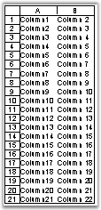

This topic describes how to show/hide the elements in a worksheet and workbook.
· Grid Lines
· Headings
· Scroll Bar
· Sheet Tabs
Grid Lines
Some users may find it easier to work with your worksheet applications, if they cannot see the grid lines. Excel provides options to show/hide grid lines in the worksheet. This is done by accessing the GridLines option by opening the Tools menu, pointing to Option, and then selecting GridLines.
XlsIO provides support for this feature through the IsGridLine property of IWorksheet. Color for the grid line can also be set through the GridLineColor property of IWorksheet.
|
[C#]
// Hides grid line. sheet.IsGridLinesVisible = false; |
|
[VB]
' Hides grid line. sheet.IsGridLinesVisible = False |
Headings
Headings are the display labels in worksheets that enable users to find out the cell number with ease. You can show/hide these headings by using the IsRowColumnHeadersVisible property of IWorksheet.
|
[C#]
sheet.IsRowColumnHeadersVisible = false; |
|
[VB]
sheet.IsRowColumnHeadersVisible = False |

Figure 151: Row/Column Headers
Scroll Bar
You may allow the users to view a particular worksheet, but hide the content in the last part of the worksheet from them. This can be done by hiding the scrollbars, by turning off either scrollbar checkbox, in the View tab of the Options dialog box.
XlsIO allows to control the visibility of these horizontal and vertical scrollbars in a workbook by using the IsHScrollBarVisible and IsVScrollBarVisible properties of IWorkbook as follows.
|
[C#]
//Hides Horizontal scroll bar and show the vertical scroll bar workbook.IsHScrollBarVisible = false; workbook.IsVScrollBarVisible = true; |
|
[VB]
'Hides Horizontal scroll bar and show the vertical scroll bar workbook.IsHScrollBarVisible = False workbook.IsVScrollBarVisible = True |
Sheet Tabs
Excel allows to show/hide the workbook tabs, to prevent users from switching between sheets through sheet tabs, and focus their attention on a particular sheet.
XlsIO provides an option to hide the workbook tabs by using the IWorkbook.DisplayWorkbookTabs property. XlsIO also provides an option to get the current tab that is displayed by using the DisplayedTab property of IWorkbook.
|
[C#]
workbook.DisplayWorkbookTabs = false; |
|
[VB]
workbook.DisplayWorkbookTabs = False |